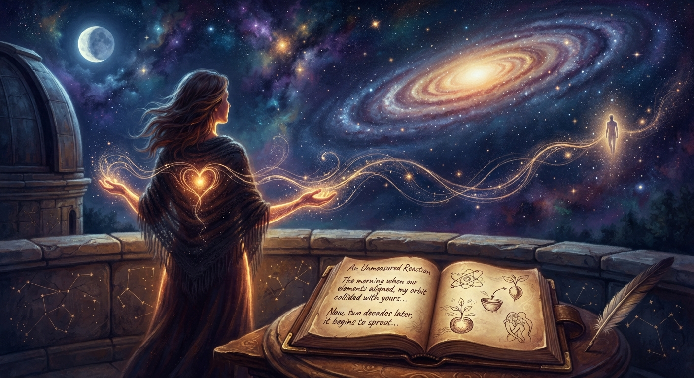

Unspoken: Poems of Love and Memory

An Unmeasured Reaction
About this poem
An Unmeasured Reaction is a poem about love, memory, distance, and the invisible forces that connect two people across time. Through the
language of chemistry and the cosmos, it explores an unexpected connection that remained dormant for two decades, only to awaken through poetry. It is a reflection on longing, separation, emotional memory, and the possibility of reunion.
🎵 "Delicate Cinematic Piano" - echoes_of_lumen (Pixabay Music)
